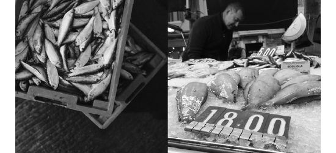
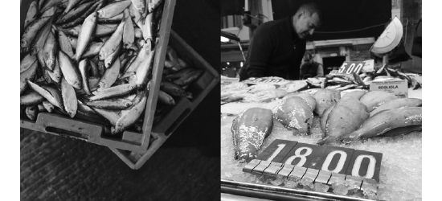
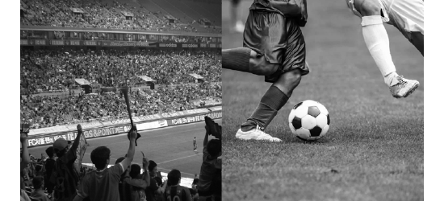
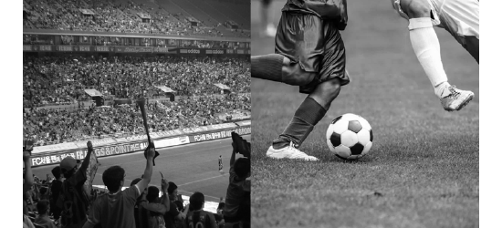
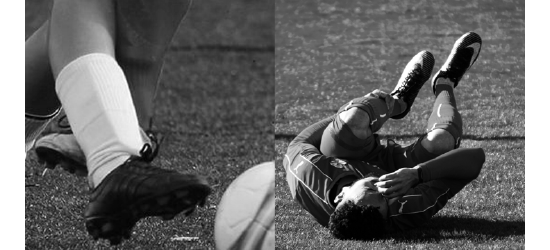
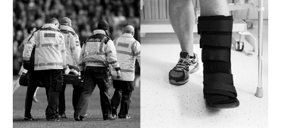
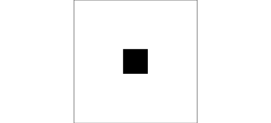
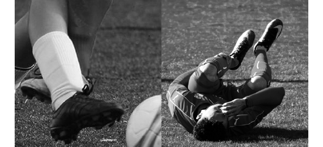
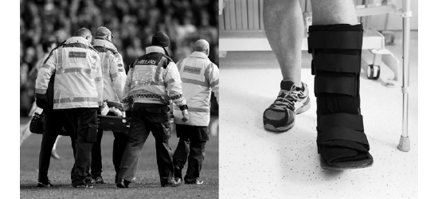
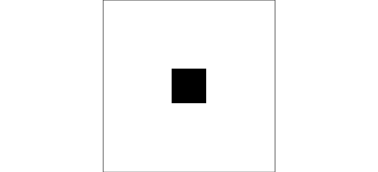

Sequential Booklets

Project Explanation
The purpose of the three booklets was to tell a story from page to page using nothing but images. In graphic design we focus a lot of type and our ability to organize and design type, but the way we use images is also very important. There were three different books. The first started with a circle and ended with a circle. the second started with a circle and ended with a square. The third started and ended with a one inch by one inch image the first and last one inch icon were supposed to be as conceptually different as possible.
Book One: Circle to Circle
In this book the goal was to tell a story that started in a circular shape and ended in a circular shape. For all three of the books I used images found online, mostly from stock image sites and converted them to black and white.


 



Book Two: Circle to Square
This book was interesting because the story starts and ends with a different shape. I also wanted more of a surprise to the ending. I started with the story of a soccer game. my hope was that in the middle people would guess that the square was going to be the goal, but at the end the story changes.

 

 





Book Three: Icon to Icon
The goal of this book was to start with an image and move to an image that relates to it and after a few image changes the we end with an image that is completely different from the first, like a game of telephone with images. This one was harder than I expected it to be because by the time I made four or five image changes it seemed different enough that moving further wouldn't make any difference, but after a little trial and error I found a path that I liked.
My thoughts
I enjoyed putting the booklets together. I learned a lot about images and image composition. It can be easy to just let an image fill space and not really think about what it does for a composition, but when you don't use text at all it's easier to see when the images are being used well and when they aren't. I'm learning a lot about how to use images and how to make sure that they work together.